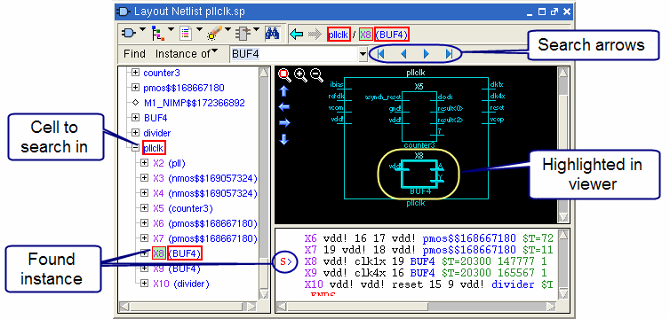
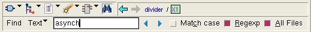

Internal Schematic Viewer Find Bar
Access:
Use the Find icon  in the schematic toolbar to
turn the find bar on and off.
in the schematic toolbar to
turn the find bar on and off.
The find bar in the Internal Schematic Viewer can search for nets, instances, devices, and text.
Select the type of find in the dropdown list, as shown in the next figure.
Find Named Net and Find Named Inst/Device —Type the named element in the text field and press Enter on the keyboard to find and highlight the selected element. Right-click in the text field for a cut and paste menu, as shown in the previous figure.
Find Instance of — Select the instance to find from the dropdown list. The search is made only in the selected cell. Use the search arrow buttons to start the search, and to move to the next or previous instance. A beep is sounded if the instance does not exist in the cell. See the following figure for a view of the schematic browser after finding an instance.
Figure 2. Schematic Find Instance in HierarchyFind Text — See the following figure. This find bar searches for text strings in the netlist. Right-click in the text field for a cut and paste menu. The search string appears in red if the string is not found in the netlist.
Figure 3. Schematic Find in Netlist